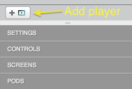
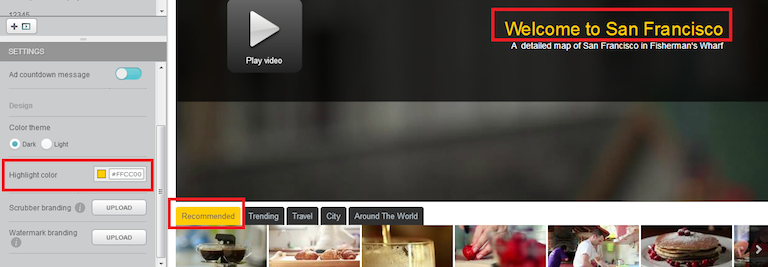
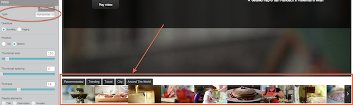
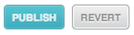

You can create a player at any time. Within a player you can enable pods to display your
playlists.
Players let your viewers watch the content in your themes. You can customize many aspects of a
player, including but not limited to the following:
- controls
- buffer settings
- advertising countdown message
- color theme and highlight color
- scrubber and watermark branding images
You can also enable and customize pods, which are invisible containers for playlists. Pods can
contain one or more playlists and can be customized to display playlists in different positions
with respect to the player. You can create pods and players programmatically or with the Theme
Builder UI.
Note: To enable the same custom pod across multiple players with the UI, you must
manually enable and customize the desired pod for each player.
The left panel of the
Players tab includes the
+
control to create a new player and is divided into several sections, grouped by types of controls:

To create a player and enable pods:
-
Log in to Theme Builder.
-
Click the Players tab.
-
In the middle of the left panel, click +.
The Add Player dialog box appears.
- Enter a name for the player and click Save.
Note: The player you see
displayed as a result is only a sample player, not real content.
-
Click the Settings submenu and select from the following:
-
To configure the controls to automatically hide when the viewer stops moving the mouse, set Auto-hide controls to ON.
-
To configure the content within this player to continue downloading when the viewer clicks the pause button, set Buffer on pause to ON. This can improve the viewing experience if the viewer has a poor Internet connection. However, if the viewer does not continue watching the content, it can be a waste of bandwidth.
- To display an advertising countdown message that communicates how long the advertisements
will run before the content starts, set Ad countdown message to
ON.
-
Select between a Dark and Light
Color theme.
The graphics below show the difference between
Dark and
Light: the color of the tabs in the playlist:
- Select a Highlight color.
The example below shows the text
affected by the Highlight color selection. In addition, this control
sets the color of the scrubber bar and the shadow color behind the tools you enable for your
theme.

- To select an image to display when the viewer is navigating through the video, click the
Scrubber branding
UPLOAD button and select an image that follows these guidelines:
- The following formats are allowed:
PNG, JPG, GIF and SWF. (For watermarks, we suggest PNG with transparent background.)
- The image dimensions should not
exceed 320 pixels x 240 pixels.
- The size of the image file must not exceed 1MB.
- The suggested image aspect ratio is 4:3.
- To select a watermark image, click the Watermark branding
UPLOAD button and select an image that follows these guidelines:
- The following formats are allowed:
PNG, JPG, GIF and SWF. (For watermarks, we suggest PNG with transparent background.)
- The image dimensions should not
exceed 320 pixels x 240 pixels.
- The size of the image file must not exceed 1MB.
- The suggested image aspect ratio is 4:3.
- If desired, enter a target web site or other URL for the value of Click-through
URL. The click-through URL is the destination on the Internet to which a viewer's
browser is directed when the watermark is clicked.
-
Click the Controls submenu and select from the following:
-
To provide volume controls to the viewer, set Volume controls (desktop only) to ON.
-
To enable the viewer to display content in fullscreen mode, set Fullscreen controls to ON.
-
To enable the viewer to change the bit rate at which the video is displayed, set
Bitrate selector to ON. When enabled, the
viewer can select among Low (the lowest bit rate for the video), Medium (the middle bit
rate), and High (the highest bit rate available). Because videos are usually delivered via
adaptive bit rate (ABR) and Ooyala automatically selects the optimal bit rate available for
the connection, we recommend setting this to OFF.
-
To enable closed captions, from the Closed captions list box,
select the desired language or None. During playback, if no closed
captions are available for the video, the closed captions option is not displayed.
- Click the Screens submenu and select from
the following to set where tools like sharing, info, and so on are displayed in the video.
Descriptions of the different screens presented in the Screens submenu are explained in Design
Choices.
- From the Screen list box, select the type of screen to modify. The
screen types and their settings are correlated below.
| Start |
Pause/Hover |
Share |
Info |
End |
- Description On/Off
- Title On/Off
|
|
- Email to Friend On/Off
- URL On/Off
- Facebook On/Off
- Twitter On/Off
|
- Title On/Off
- Description On/Off
- Presented by On/Off
|
- Replay On/Off
- Share On/Off
- Embed On/Off
- Info On/Off
- More On/Off
|
- Pods enable you to configure how playlists and recommended videos are displayed. Click the
Pods submenu and select from the following:
Note: Pods are set to NONE by default. If you leave this setting as NONE for
your player, playlists are not visible to users. To make playlist visible to users, set
PODS to either Horizontal or
Vertical.
- To enable and display the pod, select Horizontal or
Vertical from the Type list box.
Note: When the
PODS setting is changed, a demo playlist is shown below your player,
as highlighted below.

This is not your content. This is only to illustrate what adding a playlist will look
like. You add your own playlist when you combine it with a player on the
Embed tab, as described in
Working with Embeds in Theme Builder.
- From Overflow, select whether the arrows scroll or page through
recommendations. When set to scrolling, clicking the arrow moves one video at a time. When set
to paging, clicking the arrow moves one page at a time (horizontal only).
- From Rows, select how many rows of videos to display (horizontal
only).
- Select where the pod will appear from Position. You can select
TOP or BOTTOM for a horizontal pod or
LEFT or RIGHT for a vertical pod.
- Select the size of the thumbnail from the Thumbnail size slider.
- Select the spacing between the thumbnails from the Thumbnail
spacing slider.
- Select the size of the font from the Font size slider.
- From the Playlist Elements subsection, select whether the
Title, Description, and
Duration are displayed in the pod.
- Select whether the text elements are positioned over or outside the thumbnail.
Note: If
you choose to place the pod above the player with the text elements positioned over the
thumbnail, only the video title can be shown.
-
When you are finished, to publish your changes, click Publish. To
discard your changes, click Revert.
Note: When you click Publish, your changes are saved. In addition, if you
have previously embedded this playlist or player (that is, if you have previously published it),
the saved changes become visible.
